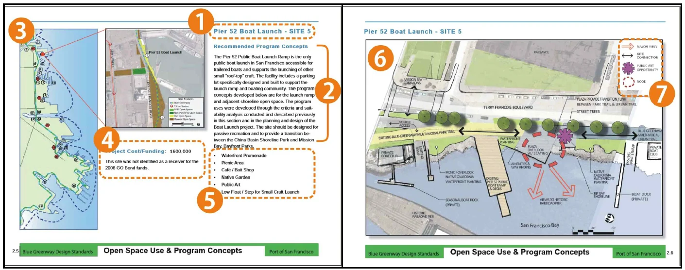
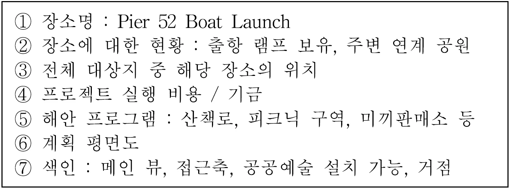
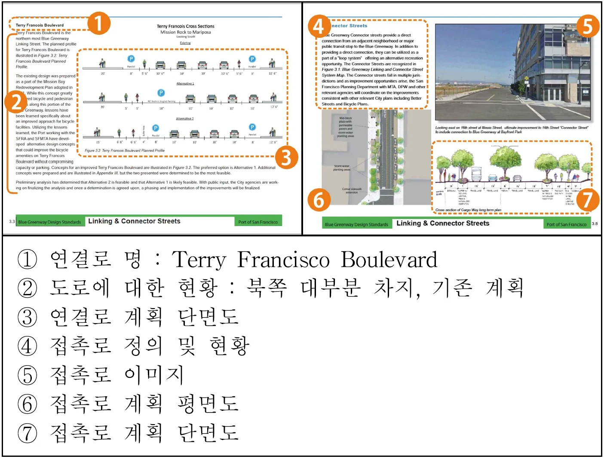
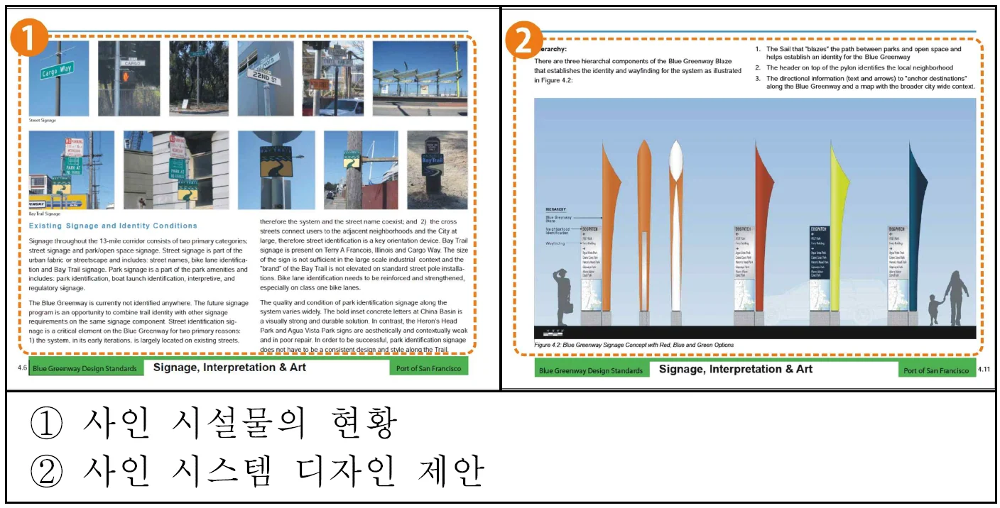
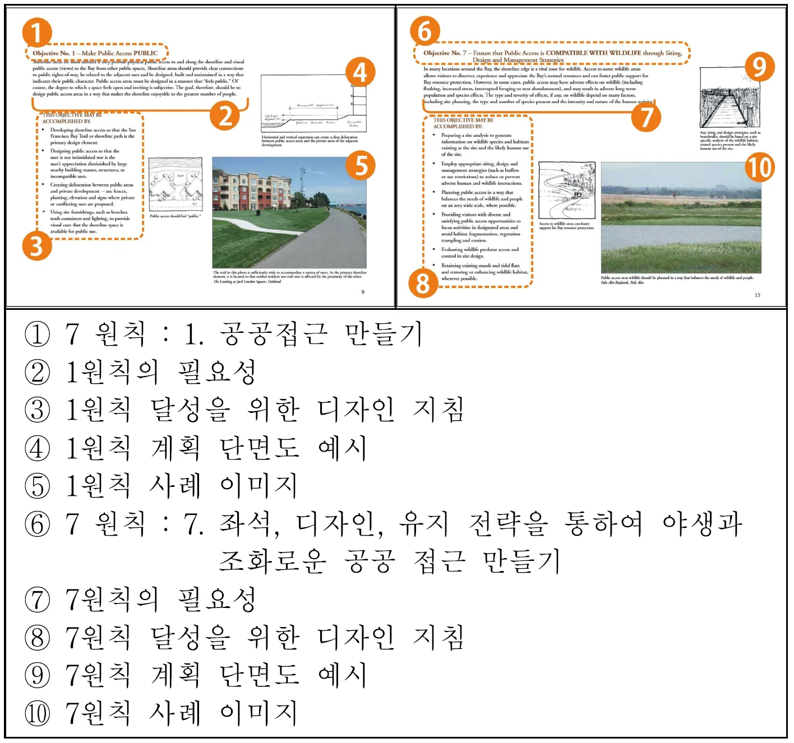
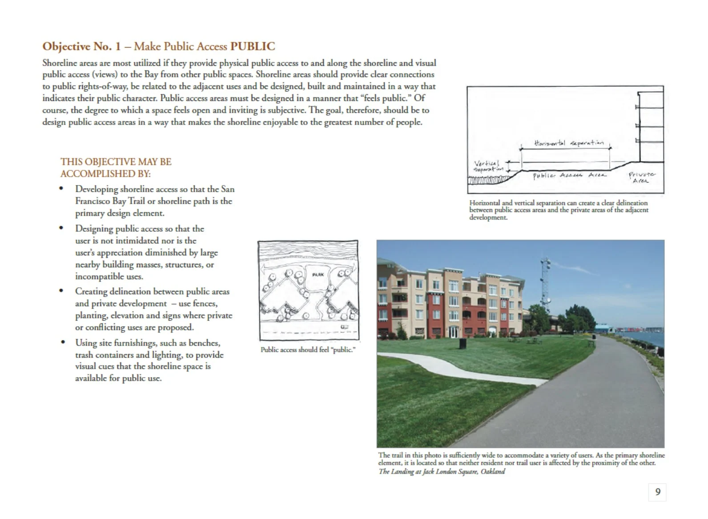
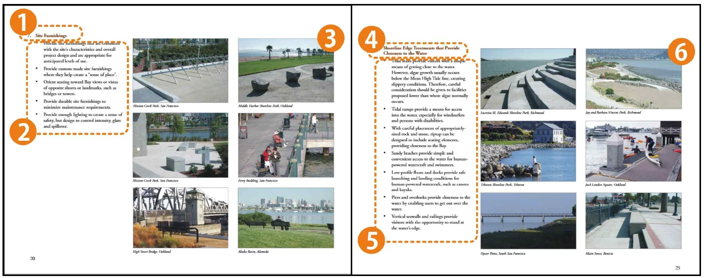
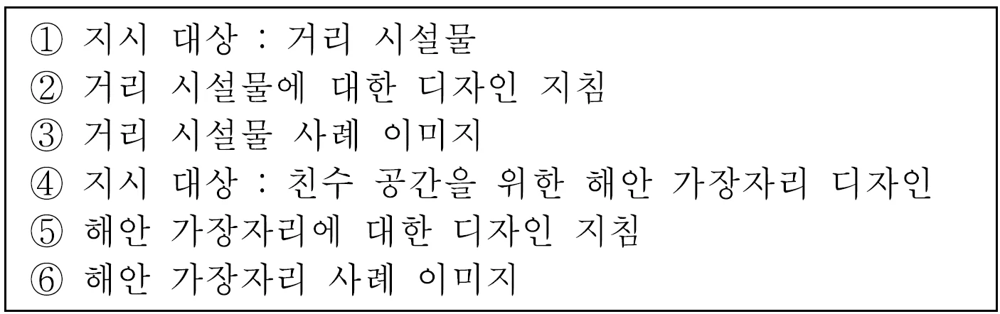

바다는 무엇을 따라야 하는가 — 연재 7회
문화 ․ 생활
바다는 무엇을 따라야 하는가?Ⅶ
Maritime space follows something?Ⅶ
다양한 해양 공간들의 사례들을 살펴보면서 그 트렌드와 방향성 등을 살펴보고 있습니다. 우리가 이러한 사례들을 통해 단순히 공간과 관련한 기능적 관점에서 바라볼 것이 아니라 조금 더 깊은 관점에서 이를 바라보고 해석해야 할 필요성이 있습니다.
작금의 해양 공간은 육역의 자원 고갈로 인한 개발 한계와 구미(歐美)일부 도시의 수변 공간 재개발의 성공으로 1960년대 이후 지역 경제발전의 중점 대상이 되었습니다. 경제적 가치 창출의 기대와 문화적·공공적 사용이 증가됨에 따라 개발로 인한 자연성훼손과 사용자 간의 충돌이라는 문제점이 커질 것도 예상됩니다. 또한 천연자원을 활용한 수산업이나 무역, 교통 거점으로서의 전통적 해양관련 산업은 점차 레저, 스포츠, 비즈니스와 그 외의 문화 활동에 관련된 관광 영역으로 확장되고 있으며 관광 대상이 해수욕장에서 마리나, 어촌, 항만, 어항, 쇼핑 및 문화시설 등으로 다양화되어가고 있습니다. 공간 활용에 대한 시간적 제약이 완화됨과 동시에 사계절 내내 많은 대중이 모이는 공간적 가치를 가지는 중요한 공간 자원으로서 발전해 나가고 있는 것입니다.
이처럼 해안 공간이 삶의 질 향상을 위한 문화적·공공적 대상으로서 많은 부가가치를 창출하고 있으나 그 이면에 고밀도 개발로 인한 자연성 훼손과 경관 저하, 사용자 간의 공간 이용에 대한 충돌이라는 문제점이 발생하기도 합니다. 이를 해결하기 위하여 세계 각국에서는 정책적으로 해양 공간관리를 위한 제도 및 관리방안을 수립, 시행하고 있습니다. 따라서 트렌드에 따른 다양한 사례를 만들어 내는 것도 중요하지만 잠재적 해양 공간 관련 문제를 해결하기 위한 공간관리의 다양한 제도 및 관리 방안에 관한 연구와 실행도 필요할 것입니다.
해안 디자인 가이드라인은 그러한 해양공간관련 관리 수단 중 하나로서 해안 도시의 구조 및 축의 설정에서부터 특정 시설물의 형태 및 재질, 색채에 이르는 사항에 기준 또는 지침을 제시하고 있습니다. 해안 디자인 가이드라인은 육역의 그것에 비해 사례가 많지는 않습니다만 위에서 거론한 기준에 대한 이용 지침으로 개발되었습니다. 이미 육역에서는 도시별 디자인 가이드라인이나 공공디자인 가이드라인 등의 개발을 통하여 조화로운 도시 공간 경관 형성을 위해 노력하고 있으며 해양의 경우, 공간적 특성 외에 풍토적·경관적·사회적 특수성 등을 고려한 가이드라인이 별도로 개발될 필요가 있는 것도 사실입니다.
우리나라는 지리적으로도 해양과 밀접한 생활권을 갖고 있으며 주5일제 시행 등으로 인해 해안을 찾는 인구도 급증하고 있습니다. 그러나 해안 환경의 보호와 방문객의 안전한 활동, 공간의 다양한 활용을 위한 최소한 기준의 제시 등을 포함하는 해안 디자인 가이드라인 개발은 미흡한 실정입니다.
따라서 본 기고를 통해 국외 해안디자인 가이드라인을 간단하게 살펴보고 해안 맞춤형 가이드라인에서 다루어야 할 요소와 디자인 기본 방향 및 시사점을 살펴보고자 합니다. 이를 통해 추후 해양공간의 특징에 따른 디자인 가이드라인의 유형의 특성을 생각해보고 해양 공간의 가치 창출을 위한 방향성에 대해서도 간단하게 고민해보고자 합니다. 궁극적으로 국외 해안 디자인 가이드라인의 구성과 내용을 살펴봄으로써 국내 현황에 적합한 디자인 지침의 방향과 시사점을 도출하고자 합니다.
이를 위하여 미국 샌프란시스코 만, 호주뉴사우스웨일스, 일본 카와사키 시 및 국내 부산시 해안 관련 디자인 가이드라인을 살펴보고자 합니다. 미국 샌프란시스코 만 블루 그린웨이 디자인 가이드라인의 경우 장소성을 고려한 해안 프로그램과 계획도, 도로 디자인 지침과 통합 사인시스템 디자인 등을 제시하여 구체성이 높은 특징을 가지고 있습니다. 샌프란시스코 만 연안공간 공공접근 디자인 가이드라인은 접근성 강화를 목표로 물리적, 시각적 접근을 위한 디자인 지침을 제시하였습니다. 우리가 살펴볼 또 다른 사례 하나는 호주 뉴사우스웨일스 해안 디자인 가이드라인인데 이는 주거지를 유형화하여 각각의 지형·성장잠재력 등의 상황에 맞는 디자인 지침을 제시한 특징을 가지고 있습니다. 추가로 일본 카와사키시 임해부 색채 가이드라인은 공장 구조물에 대하여 지구별 색채 범위 및 배색 예시를 제공하고 있습니다.
이러한 해양 공간 관련 디자인 가이드라인의 사례 관찰을 통해 해안 디자인 가이드라인 개발 시 고려해야 할 사항을 살펴보고자 합니다. 여러 특징들 중에서도 먼저 해안의 풍토, 경관, 지형 등을 고려하여 일반 수공간과는 차별화된 장기적 관점의 디자인 지침의 중요성과 둘째, 해안 공간에서 자연과 인간, 거주민과 방문객 간의 충돌 방지를 위하여 활동 구역의 경계를 명확히 해야 하는 공간 이용에 관한 부분 및 개발 전 이용자의 수요 및 현황을 상세히 분석해야 합니다. 셋째, 주변 지역과의 연계를 위한 통합적 해안 디자인 가이드라인이 필요하며 이는 물리적, 시각적, 내용적 디자인 방안으로 제시될 수 있습니다.
사실 육역에서는 도시디자인 기본조례나 공공디자인 진흥법, 재생특별법 등 다양한 법적 근거 및 실행 근거를 통해 우리 공간에 대한 기능적 측면 외에 다양한 관점에서의 계획과 실행을 위한 지침 및 가이드라인에 대해 연구가 진행되고 있습니다. 해양 공간에 관한 디자인적 관점의 가이드라인은 다양한 해석과 함께 다른 관점에서의 계획으로 해양 공간 환경의 가치를 창출할 수 도 있습니다. 이번 사례를 살펴보면서 해안 디자인 가이드라인에서 다루어야 할 디자인 대상과 도심과는 다른 특수한 고려 사항들을 알아보고 이를 통해 국내 해안 맞춤형 디자인 가이드라인 개발에 대한 고민으로 이어지기를 바랍니다.
1.미국 샌프란시스코 만 블루 그린웨이 디자인 가이드라인
미국의 샌프란시스코 시 항만부서는 샌프란시스코만을 위한 해안 디자인가이드라인으로서 2011년에 ‘블루 그린웨이 계획과 디자인가이드라인’을 발행하는데 2008년부터 논의되어 온 샌프란시스코 만의 공간계획에 대해 홈페이지를 통하여 지속적으로 공개, 업데이트 하고 있습니다.
블루 그린웨이 계획과 디자인가이드라인 개발의 목적은 샌프란시스코 만의 남동부에 공공 오픈 스페이스와 해안으로의 접근을 위한 네트워크를 창출하기 위함인데 구체적으로는 첫째, 기존에 존재하고 있었거나 새롭게 계획된 해안 오픈 스페이스의 위치와 접근 공간을 파악하고 둘째로는 그들 간 또는 주변 지역과 해안 간의 접근로를 구축하는데 목표를 두고 있습니다. 또한 이러한 네트워크 구축 방편으로서 연결로 설계와 같은 도시 구조상의 변형 외에도 통합 사인시스템 및 이용 프로그램 개발이라는 소규모 단위의 디자인 계획을 포함하며 마지막으로 실제 적용할 수 있는 시설물과 사인 디자인 타입을 제시하고 있습니다. 본 디자인가이드라인의 구성과 내용을 간단히 살펴보면
1. Introduction은 추진배경, 계획과정, 목적, 주요, 내용설명, 추후일정 및 시민의견 반영 홍보에 관한 내용이 들어가 있고 2. Part Open Space Use and Program Concepts(항구의 오픈스페이스 사용 및 프로그램 컨셉)의 주제 항목에는 대상지, 디자인 방향 및 고려사항, 세부 장소별(11곳) 추천 프로그램, 세부 지도 등을 다루고 있습니다. 3. Linking and Connector Streets(연결과 접촉거리)라는 제목을 지닌 세 번째 항목에서는 2개 타입(Linking, Connector)의 거리 구분, 각 타입에 해당하는 대표 거리의 계획 단면도 등을 제시하고 있습니다. 4. Signage, Interpretation & Art(사인, 설명과 예술)에서는 통합적 시스템 개발 필요성, 역사적 구조물의 랜드마크화 제안, 사인과 아이덴티티 현황, 디자인 방향, 디자인 제안 등 실질적인 내용을 제시하고 있으며 5. Site Furnishings(거리 시설물)항목은 해안 공간 관련 공공시설물의 일반적 디자인 방향 및 고려사항, 배치 및 제작 고려사항, 색상과 재질 제안, 특수 시설물(자전거 거치대, 음수대, 경관블록) 디자인 방향, 일반 시설물 기본 디자인 방향을 매우 구체적으로 제시하고 있어 이를 통한 실행 계획들이 일관성을 가질 수 있도록 하였습니다. 6. Project Cost & Implementation(프로젝트 비용, 실행)은 예산과 관련한 항목으로 실제 진행을 위한 실천적 전략을 담고 있습니다. 블루 그린웨이 프로젝트 비용 및 실행 우선순위 선정, 추가비용 확보 계획 등을 담고 있습니다. 7. Next Steps(다음 단계) 항목에서는 추후 계획 공정, 진행상황, 예술가 및 시민 참여 상황을 담고 있고 8. Appendices(부록) 부분을 통해서는 장소별 상세 투자비용, 장소별 설치물 및 계획내용 차트, 연도별 진행 사항, 장소별 프로그램 매트릭스 등을 담고 있습니다. 간단한 목차와 내용만 살펴봐도 샌프란시스코 만 블루 그린웨이 디자인 가이드라인이 얼마나 실질적이고 구체적인 지침과 전략을 제시하고 있는지 알 수 있으며 이러한 지침을 통해 샌프란시스코 만 해안공간의 디자인적 관리를 할 수 있을 것입니다.
본격적인 디자인 가이드라인이 시작되는 2장에서는 대상지를 11곳으로 나누어 특성을 간략히 설명하고 적합한 해안 프로그램을 제시하고 있어 매우 현실적이고 실천적인 가이드라인의 모습을 보여주고 있습니다. 또한 계획 평면도를 통해 인접도로의 구조와 현존하고 있는 시설 및 차후 디

<그림 1> 해안 인접 공간에 관한 가이드 < IMAGE :해안 디자인 가이드라인의 구성요소 및 특성 분석, 한국디자인문화학회>

자인 계획을 표기하여 이해를 돕고 있는 특징은 여타 디자인 가이드라인에서 보기 힘든 부분들입니다.
<그림 2> 해안 연결로에 관한 가이드 < IMAGE :해안 디자인 가이드라인의 구성요소 및 특성 분석, 한국디자인문화학회>

또한 이 가이드라인에서는 ‘연결’에 관한 내용을 중요하게 다루고 있는데 블루 그린웨이 시스템을 연결하고 있는 도로들을 연결로(Linking Street)와 접촉로(Connector Streets) 2개 타입으로 구분하여 각 타입에 해당하는 대표 거리를 선정, 계획 단면도의 예시를 제공하고 있습니다. 여기서 연결로란 해안의 오픈 스페이스들을 연결하고 중심축을 만들어내는 길로서 해안선과 평행한 대로를 의미합니다.
<그림 3> 해안 사인물에 관한 가이드 < IMAGE :해안 디자인 가이드라인의 구성요소 및 특성 분석, 한국디자인문화학회>

사람들을 안내하는 해안의 안내사인에 관한 내용도 디자인 가이드라인에 담고 있습니다. 블루 그린웨이에 설치되어 있는 사인물의 문제점을 분석하고 통합 사인시스템 구축의 필요성과 실질적 디자인 안을 제시하고 있습니다.
현재 사인물은 낙서와 파손이 심하며 식별성이 낮아 사람들을 해안으로 안내하는데 무리가 있으므로 내구성 있는 재질을 사용하고 굵은 글씨를 통하여 보행자 및 운전자에게 정확한 정보를 전달할 수 있는 기능과 디자인에 관한 내용도 다루고 있습니다. 또한 일반 도시 안내사인과 다르게 해안 공원, 보트 출항소, 역사적 장소에 대한 식별 표기가 있어야 하며 북부와 남부 지역의 사인은 동일한 형태 하에 컬러 및 재질 선택에서 미묘한 차이를 가질 것을 권장하고 있습니다. 이를 위하여 돛을 형상화한 안내 사인의 시안을 제시하고 있는 등 구체적인 디자인안도 제시하고 있는데 이를 통해 기존 항구 시설물을 시각적 랜드마크화 하도록 제안하고 있습니다. 상징 조형물등 새로운 시설물의 도입을 통해 정체성을 나타내려는 우리와는 많은 차이가 있습니다.
2.미국 샌프란시스코 만 연안공간 공공 접근 디자인 가이드라인
샌프란시스코 만 연안공간 공공접근 디자인 가이드라인은 2005년에 샌프란시스코 만 보존 및 개발위원회(BCDC)에 의해 개발되었으며, 만의 매력적 경관 창출 및 자연 자원과 야생을 보호하는 동시에 공공의 접근성 향상을 목적으로 하고 있습니다. 이를 위하여 물리적, 시각적 접근 방안을 다음의 7가지 목표 하에 제시하고 있습니다.
1. 공공접근 만들기
2. 이용 가능한 공공접근 만들기
3. 만과 연안으로의 시각적 접근을 강화, 유지
4. 만과 연안, 인접 개발지의 시각적 질 유지
5. 해안선을 따라 연결과 연속성 제공
6. 만의 이점을 활용
7. 좌석, 디자인, 유지 전략을 통하여 야생과
조화로운 공공 접근 만들기
샌프란시스코 만 연안공간 공공접근 디자인 가이드라인의 구성 및 주요 내용은 6개의 목차로 이루어져 있는데 주요 내용은 다음과 같습니다.
첫 번째는 1. Introduction(서론)으로 시행주체(bcdc)의 역할, 공공 및 공공접근에 대한 개념, 목적, 이용대상, 사용법에 대한 개념을 정의하고 있고 2. General Planning Principles은 일반적인 설계 사항을 다루는데 장소 맥락, 장소별 계획 등 기본적 디자인 방향 및 고려사항을 담고 있습니다. 3. The Seven Public Access Objectives은 7개의 공공접근 원칙으로 각 원칙에 대한 필요성, 다양한 실행방안등을 설명하고 있습니다. 4. Site Specific Public Access Improvements는 장소별 특수한 공공 접근 개선으로 폭우 관리 시스템, 도로, 주체와 공공스테이지, 보행자 길과 자전거 전용로, 사인 등 장소별,
시설물별 디자인 가이드라인을 다루고 있습니다.
5. In-Lieu Public Access 대안적 공공 접근이라고 하여 공공 교통 인프라 구축 사례와 야생동물과의 충돌 방지를 위한 대안적 접근방안 마련 필요성 등을 제시하고 있습니다. 마지막 6. Management Issues에서는 책임사항, 규칙과 제한 등을 가이드하고 있습니다.
<그림 4> 해안 공공 접근 7원칙 가이드 < IMAGE :해안 디자인 가이드라인의 구성요소 및 특성 분석, 한국디자인문화학회>

해안 공간에 대한 공공접근성을 향상시키기 위한 7개의 원칙을 제시하는 디자인 가이드라인은 매우 흥미로운 내용이며 우리의 해양 공간을 디자인하고 개선하는데 ‘접근성’을 향상 시켜야 한다는 중요성을 벤치마킹 할 수 있는 좋은 아이디어입니다. 그 내용을 간단히 살펴보면 원칙 1인 공공접근을 만들기 위해서 인근 건물이나 구조물의 볼륨에 의해 사용자가 위압감을 느끼지 않도록 해야 한다는 지침을 담고 있으며 공적, 사적 공간 사이에 휀스나 담장을 설치하여 사용자 간 충돌도 줄이고 벤치, 조명과 같은 편의 시설을 제공할 것을 제안하고 있습니다.
<그림 5> 미국 샌프란시스코 만 공공접근 디자인 지침서 관련 이미지
< IMAGE :Shoreline Spaces, Public Access Design Guidelines for the San Francisco Bay, bcdc>


<그림 6> 장소별 특수한 공공접근 개선 가이드 < IMAGE :해안 디자인 가이드라인의 구성요소 및 특성 분석, 한국디자인문화학회>

원칙 2인 이용 가능한 접근을 위해서는 기 설치된 시설물이나 장소의 특성을 분석하여 활동을 도울 수 있는 부가적 시설 설치를 권장하고 있습니다. 그 사례로서 갯벌로의 접근을 위한 계단, 경사로 또는 이동식 부두 등이 그 예이며 조명 설치로 야간 이용성을 증대하며 화장실, 공용 주차장 제공을 통하여 많은 이들이 접근할 수 있도록 유도하는 전략을 디자인 가이드라인으로 제시하고 있습니다.
3,4원칙과 같이 시각적 디자인 방안으로서 경관, 조망 축을 형성하여 도시 어디에서든 해안을 바라볼 수 있도록 지침으로 가이드하고 있으며, 해안선 건물의 높이 규제, 휴먼스케일의 시설물 설치를 권장하고 있는 것이 특징입니다. 특히 7원칙에서는 야생 동물의 영역을 침해하지 않도록 버퍼 구간의 설정이나 서식지 보호 구역 지정, 관찰 데크 설치 시 높은 단차 적용 등을 권장하는 등 다른 가이드라인에서 볼 수 없는 특화 된 내용 또한 담고 있습니다.
4장의 장소별 특수한 공공접근 개선 파트는 장소의 기능이나 사물에 따른 디자인 지침을 제시하고 있습니다. 지시대상은 폭우 관리 시스템, 해안로와 고속도로, 공공 주차장과 스테이지, 보행 및 자전거 다리, 거리 시설물, 사인 시스템, 야생 동물에 부정적 영향을 피하는 방안, 해안선 침식 제어, 친수 공간을 위한 해안 가장자리 디자인, 산책 코스, 해안선 식재, 낚시 시설, 공공 예술 등으로 매우 특별한 대상까지 다루는 것이 특징입니다. 대상 항목을 파악하는 것만으로도 해안 디자인 가이드라인에서 다루어야 할 요소들을 파악할 수 있으며, 추천할 만한 디자인 사례 이미지가 수록되어 일반인도 쉽게 이해하도록 돕고 있습니다.
[참고문헌]
이현성외, ｢해안 디자인 가이드라인의 구성요소 및 특성 분석｣, 한국디자인문화학회지 ,Vol.18, No.4, 2013.
국토해양부외, ｢해양 공간의 가치 창출을 위한 해양디자인기술 개발 기획연구｣, 2012
이현성외, ｢해양공간디자인｣, 미세움, 2013.
2016년 봄호
1
항 만
2